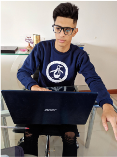

Di Benedetto, Matías

Motivado por afrontar nuevos
desafios en un entorno que
me permita explotar al
maximo mis habilidades, y
desarrollarme como
profesional.
Educación
-
Secundario Tecnico Especialidad construcciones
E.C.E.A
-
Universidad Nacional de Tres de Febrero
Administración de Empresas
-
Facebook & Instagram Ads
Workana
Experiencia
-
Administración @THECAPSCOMPANY
2018-2020
-
Proyectista y trazado de planos
2018-2019
Skills
-
Administración de E-Commerce
-
Desarrollo y lanzamiento de campañas en Facebook Ads
-
Diseño grafico
-
trazado de planos en autocad y Proyección 3d Sketch-up + Vray
Hobbies
Por que elegi Henry?
Elegi Henry debido principalmente a su acuerdo AIC que me da la facilidad de estudiar sin preocuparme por conseguir los ingresos para afrontar la carrera,tambien su estilo "moderno" llamo demasiado mi atención, ya que estaba completamente negado a continuar los estudios terciarios de manera "tradicional". Creo que henry es la oportunidad ideal para cualquier joven con ganas de insertarse en el mercado laboral del momento y futuro.